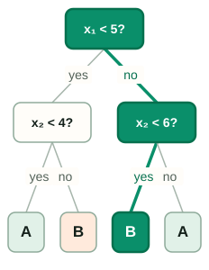
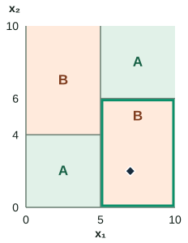

Decision Trees: Foundations
This series is a reading companion to the original handwritten notes, which follow Cornell’s machine-learning lectures. The scans stay alongside short explanations. Use the decision-tree deep dive when you want the fuller worked examples.
Read the sketch as a sequence of questions
Start at the root. Each internal node asks a question about a feature; its answer selects a child. A leaf stores the prediction. For classification it can store class proportions; for squared-error regression it stores an average target.

Trace one row: (7, 2) → class B
Give a fixed tree the query $(x_1,x_2)=(7,2)$. These are input features, not class labels. Its root asks whether $x_1<5$. Because $7<5$ is false, take the right branch. That child asks whether $x_2<6$. Because $2<6$ is true, take its left branch and read class B from the leaf. The other child’s test, $x_2<4$, is never evaluated for this row.
Two comparisons are enough even though the tree has three decision nodes. Prediction cost depends on the length of the path traversed. The row’s true class is not needed to route it; a label would be needed later to check whether this prediction was correct.
One fixed tree, two views of its prediction
Step through the same route in the tree and in feature space. Green marks the traversed path and the remaining region; the dark diamond is the query. A and B name stored leaf predictions.
The display accepts values from 0 to 10. Try (2, 2), (2, 7), or (7, 8) to reach the other leaves. A value exactly at a threshold follows the “no” branch.
Questions along the route
The same tree as regions
Completed route for (7, 2)

Selected leaf region

Query: x₁ = 7, x₂ = 2
Two comparisons: 7 ≥ 5 → right; 2 < 6 → left. Leaf reached: predict class B.
Leaf region: x₁ ≥ 5 and x₂ < 6.
Prediction: B · 2 comparisons
Drawing provenance: these companion diagrams use an illustrative fixed tree, with chosen thresholds 5, 4, and 6 and query (7, 2). They develop the scan’s routing idea; the numbers and leaf assignments are not transcribed from the scan or fitted to an accompanying dataset.
New Point draws another query while keeping the questions and leaves fixed. Reset route rewinds that query; Restore (7, 2) returns to the worked example. Changing the point changes the prediction path, not the model.
Each leaf is a region, not just a label
The two tests along a path must both hold. For the worked point, the leaf region is $x_1\geq5$ and $x_2<6$. Any other row satisfying those conditions reaches the same leaf and receives the same stored prediction. The diagram shows only the 0–10 window; its outer edges are not extra learned thresholds.
Left subtree: x₁ < 5
x₂ < 4 → class A
x₂ ≥ 4 → class B
Right subtree: x₁ ≥ 5
x₂ < 6 → class B
x₂ ≥ 6 → class A
Notice why the horizontal cuts stop at the vertical boundary. The test at 4 applies only to rows that went left; the test at 6 applies only to rows that went right. Extending either line across the entire plot would draw a different model. Also, the two B leaves remain distinct regions even though their stored class is the same.
Learn those questions from labeled rows
The scan describes training as deciding which questions to ask and in what order. For numeric features, a learner compares candidate feature–threshold pairs using the training rows and their targets. A classification split compares the parent’s impurity with the size-weighted average of child impurities, using a criterion such as entropy or Gini. The chosen question partitions those rows, and the learner repeats the search separately within each child. This greedy procedure does not examine every possible complete tree.
In the example’s right child, every training row would already satisfy $x_1\geq5$. Only those rows would be used to choose that child’s next question. The displayed threshold 6 is supplied for illustration; without training rows, there is no basis for claiming it is the best split. Growth stops when a configured limit is reached or no permitted split is available.
A leaf need not be pure. If a classification leaf contained 8 B rows and 2 A rows with equal weights, it would predict B and could report an empirical B proportion of $8/10=0.8$. That proportion describes the training rows in the leaf, not a guarantee about the next row. For squared-error regression, targets 2, 4, and 9 would instead give the leaf prediction $(2+4+9)/3=5$. These are separate examples of what a leaf may store.
The next note explains how to score a split; the pruning note explains how to control growth.
A detailed fit can be unstable
A small leaf may reflect a few unusual training rows. Slightly changing the sample can then change its prediction or an earlier split. More depth makes finer boundaries possible, but does not guarantee either perfect training accuracy or poor test accuracy. Identical feature rows with conflicting labels cannot be separated at all.
Maximum depth, a minimum number of samples per leaf, and pruning constrain that flexibility. Choose these controls using validation data, then assess the selected model on separate test data. Averaging trees and adding corrective trees provide two different ways to build on this foundation.
Sources and next steps
- Cornell CS4780: Decision Trees — Lecture companion for regions, routing, and greedy construction.
- scikit-learn: Decision Trees — Leaf predictions and practical growth controls.